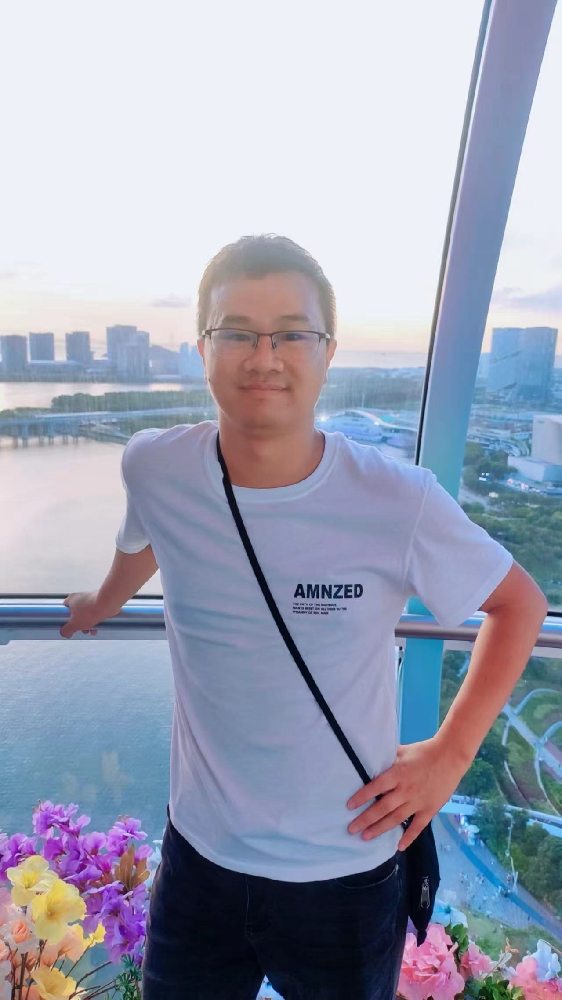

Welcome to Xun Lin's Homepage

Office: 223, Max Planck Institute for Mathematics, Bonn.
Email:xlin@mpim-bonn.mpg.de; lin-x18@tsinghua.org.cn
My supervisor of doctoral thesis is Professor William Donovan. My Curriculum Vitae .
My research is in algebraic geometry. I am interested in geometry of derived categories and GLSM models, Serre-Hochschild algebra of smooth proper dg categories, Hodge theory of algebraic varieties, and Hitchin fibration.
Currently I am working at categorical Torelli problems of complete intersection, categorical Hitchin fibration, and the Torelli problem for hypersurfaces in projective space.
General Topology, TA. Tsinghua University
Mathematical Analysis 2, TA. Tsinghua University
Functional Analysis 1, TA. Tsinghua University
Calculus A, TA. Tsinghua University
Algebraic geometry 1, TA. Tsinghua University
[November 28] IVHS via Kuznetsov components and categorical Torelli theorems for weighted hypersurfaces. SAG seminar in University of Bonn, Germany.
[July 2024] Algebraic geometry seminar in Southern University of Science and Technology. Cagtegorical Torelli for smooth hypersurfaces.
[Feb 2024] Obserseminar in MPIM. Infinitesimal categorical Torelli: an application to Kuznetsov' Fano 3-folds conjecture.
[Sept 2023] 5 minutes talk in JTP program of Hausdorff center, Bonn. A genralized theorem of Bondal Orlov reconstruction for fully faithful embedding.
[April 2023] Seminar of Advance Topics in Algebra and Geometry, Tsinghua university. A new proof of Torelli for cubic 4-folds.
[March 2023] Geometric representation theory seminar, Tsinghua university. Infinitesimal categorical Torelli.
[Nov 2022] Tsinghua preprint seminar. Hodge theory of combinatorics: an introduction.
[Oct 2022] Tsinghua preprint seminar. Categorical Torelli.
[July 2022] University of Warwick, online poster session of VBAC seminar. Indecomposibility of the bounded derived categories of Brill-Noether varieties.
[April 2022] Stony Brook university, algebraic geometry seminar. Nonexistence of semi-orthogonal decompositions and sections of para-canonical systems.
[March 2022] Cornell university, algebraic geometry seminar. Nonexistence of semi-orthogonal decompositions and sections of para-canonical systems.
[Jan 2022] Southern University of Science and Technology, Shenzhen, Geometry and Topology seminar. Nonexistence of semi-orthogonal decompositions and sections of para-canonical systems.
[Fall 2021] Tsinghua University, student seminar, VGIT and derived categories.
[Sept 2021] Tata Institute of Fundamental Research, India. Nonexistence of semi-orthogonal decompositions and the base locus of para-canonical systems.
[June 2021] Edinburgh University, Internal seminar. Derived categories of symmetric product of curves.
[May 2021] Tsinghua University, Geometry representation seminar. Noncommutative Hodge conjecture.
[March 2021] Southern University of Science and Technology, Shenzhen. Noncommutative Hodge conjecture.
[March 2021] Shanghaitech University, Shanghai. Noncommetative Hodge conjecture.
[Fall 2019] Tsinghua University, student algebraic geometry seminar. Examples of Shimura varieties.
[Spring 2019] Tsinghua University, student algebraic geometry seminar. Derived Torelli of K3 surfaces.
[Spring 2019] Tsinghua University, student algebraic geometry seminar. Nonexistence of semi-orthogonal decompositions and sections of canonical bundle.
[Fall 2018] Tsinghua University, student algebraic geometry seminar. Geometry of moduli space of sheaves on surfaces.
[July 15 - July 22, 2024] Southern University of Science and Technology, China.
[June 27 - Sept 30, 2024] Morningside Center of Mathematics, Chinese Academy of Sciences, China.
[June 26 - July 24, 2024] Yau Mathematical Sciences Center, Tsinghua university, China.
[June 4 - June 22, 2024] Shanghai center for mathematical sciences, Fudan University, China
[May 26 - May 31, 2024] Stockholm University, Sweden.
[Jan 22, 2024 - Jan 26, 2024] University of Genova, Italy.
[Dec 15, 2023 -Dec 20, 2023] University of Oslo, Norway.
[Sept 2023 - Dec 2023] Hausdorff Center for Mathematics, Bonn. JTP program, Germany
[July 26, 2023 - August 10, 2023] Sichuan University, China.
[July 10, 2023 - July 21, 2023] Tsinghua University, China.
[March 2022 - June 2022] Cornell University, USA.
[March, 2021] Shanghai Technology University, China
[Sept 2019] Geometry of derived categories, Liverpool University, UK.
[May 2019] Derived categories seminar in Sun Yat-Sen University, China
[May 2019] Algebraic geometry for Young scholars in USTC, China
Students seminar in Tsinghua University, Fall, 2022. preprint seminar.